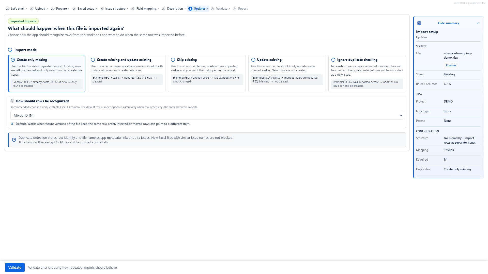

Can I update existing Jira issues from Excel?
Yes, when the import setup can match workbook rows to existing Jira issues using a stable identity such as an issue key or another supported row identity.
A first import creates Jira issues. A repeat upload often needs to update them: priorities change, owners move, due dates shift, descriptions improve and the spreadsheet handover keeps evolving during review.
This page explains how to think about Jira bulk update from Excel without turning every workbook into an uncontrolled overwrite source. For the broader import process, read the Excel to Jira import guide.
Updating from Excel is useful after client review, technical analysis, sprint planning, delivery handover or scope cleanup. Common update use cases include bulk priority updates, due date updates, ownership cleanup, description improvements, fixing imported data and syncing a reviewed spreadsheet handover into Jira Cloud.
It is less appropriate when the workbook is no longer trusted, when rows cannot be matched to Jira issues, or when the team has already made important Jira-only changes that should not be overwritten by spreadsheet values.
Repeat imports need a stable identity. Depending on the import setup, this may be a Jira issue key or another supported row identity such as an external requirement ID. The key idea is simple: the workflow must know which Jira issue a spreadsheet row is supposed to update.
If no stable identity is available, the safer path is usually to treat the workbook as a new import candidate and review duplicates carefully before creating anything.

A repeat upload should make the update identity visible and keep changed fields separate enough to review.
| Issue key | Summary | Priority | Assignee | Due date | Comment/Notes |
|---|---|---|---|---|---|
| PROJ-124 | Add onboarding checklist | High | alex@example.com | 2026-07-08 | Deadline moved earlier after customer review. |
| PROJ-130 | Validate billing address rules | Medium | maria@example.com | 2026-07-22 | Waiting for finance approval before implementation. |
| PROJ-141 | Prepare migration checklist | Low | sam@example.com | 2026-08-02 | Scope reduced after backlog grooming. |
Excel to Jira updates should be planned around fields you intentionally map. For example, one repeat upload might update Priority, Assignee and Due date. Another might rebuild Jira Description from reviewed workbook columns. A narrow mapping is easier to validate than a broad "update everything" import.
This is especially important for custom fields. Map only fields available in the selected Jira project and issue type configuration, and validate the values before applying updates.
Some updates are not simple field changes. A reviewed workbook may contain new acceptance criteria, business notes, source references or implementation context. Description Builder can combine those columns into a structured Jira Description so the update reflects the reviewed handover rather than a copied spreadsheet fragment.
Value cleanup can help when cells contain useful data mixed with extra text, inconsistent date formats or labels embedded in longer notes. Cleaning values before validation reduces the chance of pushing invalid data into existing Jira issues.
Examples include extracting requirement IDs, normalizing date values, replacing inconsistent priority labels or removing wrapper text that came from a client export.
Before applying updates, review planned changes, skipped rows, validation errors and any creates that would happen because a row could not be matched. This is the point to catch stale issue keys, invalid users, invalid dates, duplicate rows and field values that do not fit the target project.

After the run, an import report helps teams understand what changed. It is useful for handover review, troubleshooting and confirming which rows were created, updated, skipped or failed. Reports are especially valuable when the workbook is part of a client or stakeholder approval process.
Yes, when the import setup can match workbook rows to existing Jira issues using a stable identity such as an issue key or another supported row identity.
Update only the Jira fields you intentionally map, such as Priority, Assignee, Due date, Description or supported custom fields available in the target project.
Duplicates are possible when rows cannot be matched reliably. Use stable identifiers, duplicate handling and review before confirming changes.
Yes. Review planned updates, creates, skipped rows and validation errors before Jira is changed.
See the main product workflow, then continue to Atlassian Marketplace when you are ready to evaluate the app for Jira Cloud.